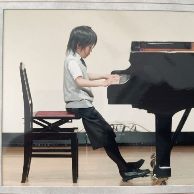
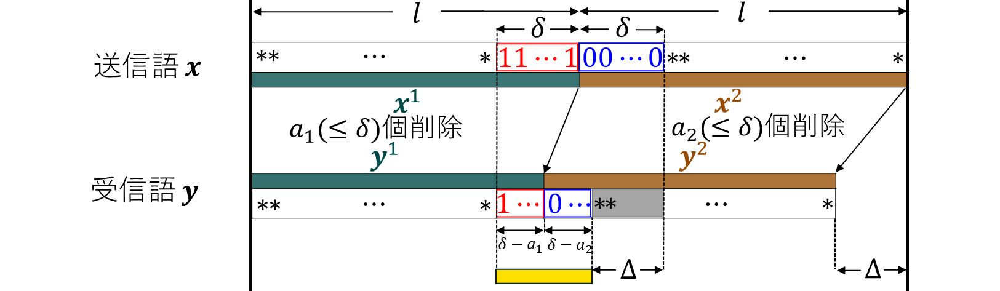

プロフィール

長嶋 城 Joe Nagashima
北陸先端科学技術大学院大学
Japan Advanced Institute of Science and Technology (JAIST)
共創インテリジェンス領域 中分研究室所属 M1
Co-creative Intelligence Nakawake Lab Master's course
経歴
| 2000/02/07 |
北海道札幌市にて生まれる |
| 2015/04-2018/03 |
北海道札幌月寒高等学校 普通科 |
| 2020/04-2024/03 |
山口大学理学部物理・情報科学科 情報科学コース(通信理論研究室) |
| 2024/04- |
北陸先端科学技術大学院大学 先端科学技術研究科(中分研究室) |
研究
大学での研究
学部時代の専門分野は「符号理論」です。データを効率的かつ信頼性高く伝送するために必要な通信技術になっています。
特に、複数の連接されたデータを送信し削除が生じた際に、各データでいくつの削除が生じたかを求める符号とそのアルゴリズムについて研究しました。
2024年1月に東北大学で開催された電子情報通信学会情報理論研究会にて口頭発表を行いました(
山口大学 トピックス)。

大学院での研究
大学院では音楽の文化進化に関する研究を行う予定です。
- ・日本におけるポピュラー音楽の歌詞の感情表現がどのような時代変化を遂げているか
- ・クラシック作品の名前がついているものとついていないものの違い
などに興味があります。
趣味
- ・ピアノ：幼少期から弾いています。好きな作曲家はショパンです。
- ・フリーBGM鑑賞：聞いてみると作者によって様々な味わいがあって面白く感じ最近はまっています。
- ・ゲーム：今までやってきたゲームの中で殿堂入りは「ゼルダの伝説 ブレス オブ ザ ワイルド」です。
インドアな趣味だけではなくアウトドアな趣味を見つけたい！と思っています。
好きな言葉・座右の銘
『過ぎたるは猶及ばざるが如し』
頑張り過ぎた反動で暫く行動不能になることが多々あるので、何事もほどほどに頑張ることを心掛けています…